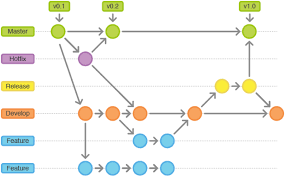

Git Flow

Git Flow es un modelo de ramificación que ayuda a gestionar el desarrollo de software de manera estructurada. Aquí tienes los conceptos clave:
- Rama principal (main): Contiene la versión estable del proyecto.
- Rama de desarrollo (develop): Se utiliza para integrar nuevas características antes de fusionarlas en la rama principal.
- Ramas de características (feature): Se crean a partir de la rama de desarrollo para trabajar en nuevas funcionalidades.
- Ramas de lanzamiento (release): Se utilizan para preparar una nueva versión del software.
- Ramas de corrección (hotfix): Se crean para corregir errores críticos en la rama principal.
Git Flow proporciona un enfoque claro y organizado para gestionar el ciclo de vida del desarrollo de software.
⬅️ Volver al inicio
Siguiente ➡️